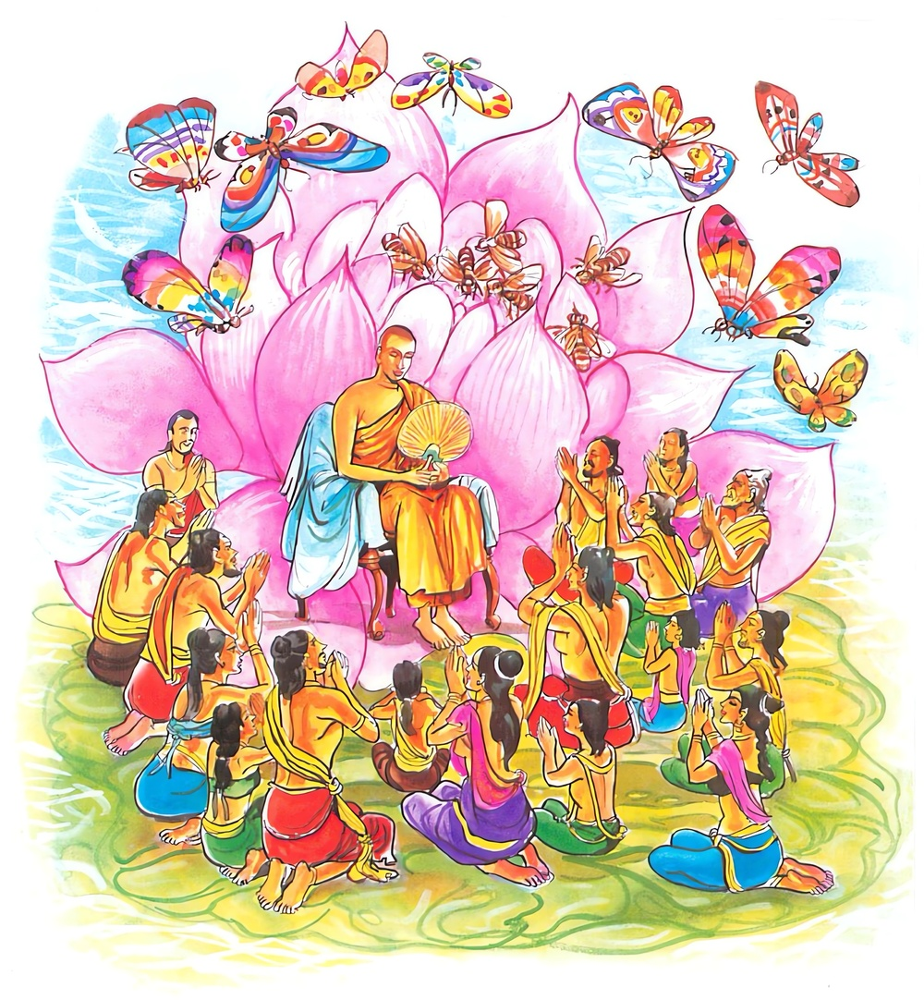

4-7 ඡත්තපාණි උපාසකතුමා
මෙම කතාව ධම්මපද අටුවාවෙන් ද කියවන්න.
යථාපි රුචිරං පුප්ඵං වණ්ණවන්තං අගන්ධකං
එවං සුභාසිතා වාචා අඵලා හොති අකුබ්බතො.
සිත්කලු වූ, මනා පැහැසටහන් ඇති, සුවඳ නැති මල් යම්සේ ද, එසේ ම මොනොවට දෙසන ලද ත්රිපිටක බුද්ධවචනය නො කරන්නහුට (ඇසීම ඉගැනීම දැරීම පිළිපැදීම නො කරන්නහුට) නිෂ්ඵල වේ.
යථාපි රුචිරං පුප්ඵං වණ්ණවන්තං සගන්ධකං
එවං සුභාසිතා වාචා සඵලා හොති පකුබ්බතො.
සිත්කලු වූ මනා පැහැති සුවඳැති මල යම්සේ ද, එසේ ම මනා කොට දෙසන ලද ත්රිපිටක බුද්ධවචනය එය කරන්නහුට සඵල වේ.

අප බුදුරජුන් දවස සැවැත්නුවර ත්රිපිටකධර වූ අනාගාමී උපාසකයෙක් විසී ය. ඔහු අතැ නිතර කුඩයක් විය. එහෙයින් ඔහු ‘ඡත්තපාණී, නමින් ප්රසිද්ධ වූයේ ය. ඔහු උදෑසනින් ම පෙහෙව ගෙණ බුදුරජුන්ට උවැටන් කරණු පිණිස යයි. අනාගාමී ආර්ය්යශ්රාවකයන්ට සමාදානවශයෙන් පෙහෙව ගැණීමෙක් නැත. මාර්ගඥානලාභය සමග ම ඔවුනට බ්රහ්මචරියවාසය හා එකහත්තික භාවය සිදු වේ. බුදුරජානන් වහන්සේ ‘ඝටීකාරො ඛො මහාරාජ! කූම්භකාරො එකභත්තිකො බ්රහ්මචාරී සීලවා කල්යාණ ධම්මො’ යි වදාළ සේක් එහෙයිනි. අනාගාමීහු ප්රකෘතියෙන් ම එකභත්තික වෙති. ඡත්තපාණී තෙමේ ද එ පරිද්දෙන් උපොසථික ව බුදුරජුන් වෙත ගොස් වැඳ බණ අසමින් හුන්නේ ය. එ දවස, පසේනදි කොසොල්රජ තෙමේ ද බුද්ධෝපස්ථානයට එහි ගියේ ය. උපාසක තෙමේ එන්නා වූ රජු දැක ‘හුන් තැනින් නැගී සිටිය යුතු දැ’ යි සිතා මම ඉන්නෙම් අග්රරාජන් වූ බුදුරදුන් වෙත ය, එ හෙයින් පෙදෙසිරජකු දැක මේ තැන නැගී සිටීම යුතු නො වේ, නො නැගිට්ටොත් රජු මට කිපෙන්නේ ය, කිපුනත් නැගී සිටීම නම් යුතු නැත, රජු දැක නැගී සිටියොත් රජ තෙමේ ගරුකරන ලද්දේ වෙයි, එය බුදුරජානන් වහන්සේට ගරු නො කිරීමක් සේ පෙණේ, එහෙයින් නො නැගිටින්නෙමි’ යි සිතා හුන් තැන ම හුන්නේ ය. නුවණැත්තෝ තමනට වඩා ගරු කළයුත්තන් ඉදිරියෙහි දී නො නැගිටින්නකු දැක නො කිපෙති. රජ තෙමේ නො නැගිටි උපාසකයා දැක කිපුනේ බුදුරජුන් වැඳලා පසෙකට වී හුන්නේ ය. බුදුරජානන් වහන්සේ රජු කිපිබව දැක ‘මහරජ! මේ උපාසක තෙමේ පණ්ඩිතයෙකි, දක්නා ලද චතුස්සත්යධර්මය ඇත්තෙකි, සාමාන්යයෙක් නො වේ, ත්රිපිටකධරය, වැඩ නො වැඩ දැනීමෙහි පොහොසතෙකැ’ යි උපාසකයාගේ ගුණ කීහ. ඒ අසා සිටි රජුගේ සිත මොළොක් විය.
පසුදින උඩුමහලෙහි සිටි රජ තෙමේ කුඩය අතට ගෙණ වහන් පයැ ලා රජගේ මිදුලෙන් යන උපාසකයා දැක අඬගා යැවී ය. ඔහු කුඩය හා වහන් පසෙක තබා රජු වෙත ගොස් වැඳ සිටියේ ය. ‘උපාසකය! අතැ තුබූ කුඩය, පය ලා තිබු වහන් කුමක් හෙයින් පසෙක තබා ආවහු දැ’ යි රජ තෙමේ ඇසී ය. ‘දේවයන් වහන්සේ මා කැඳ වූ නිසා ඒවා පැත්තක දමා ආමි’ යි කීවිට ‘උපාසකය! ඔබ මා රජුබව දැන ගත්තහු අද දැ’ යි විචාළේ ය. ‘නැත, දේවයන් වහන්ස! හැම කල්හි ම දේවයන් වහන්සේ රජබව දනිමි’ යි කී ය. ‘එසේ නම් ඔබ ඊයේ බුදුරජුන් ඉදිරියේ දී කුමක් නිසා මා දැක හුන් තැනින් නො නැගිට්ටහු දැ’ යි ඇසූවිට ‘මහරජ! එතැන දී මම නො නැගිට්ටෙම් අමුත්තකට, නො සැලකිල්ලකට නො වෙමි, අග්රරාජන් වූ බුදුරජුන් ඉදිරියේ පෙදෙසිරජකු දැක නැගී සිටීම ඒ බුදුරජානන් වහන්සේට කරණ අගෞරවයක් සේ මට ඒ තැන දී පෙණී ගියේ ය, දේවයන් වහන්සේ දැක මම නැගී සිටියෙම් නම්, එය බුදුරජුන්ට කළ අපරාධයෙක් අගෞරවයෙක් වන්නේ ය, එහෙයින් නො නැගිට්ටෙමි’ යි කීයේ ය. ‘හා! එය තුබුනා වේ, ඔබ එලොවැ මෙලොවැ දෙක්හි වැඩ අවැඩ දන්නහු ය, ත්රිපිටකධර වහු ය, මාගේ අන්තඃපුරයෙහි වසන්නන්ට බණ උගන්වන්නට ඔබට ඉඩ පහසුකම් තිබේ දැ’ යි ඇසී ය. ‘දෙවයෙනි! ඉඩ පහසු නැතැ’ යි ඔහු කී ය. ‘මොක ද ඒ’ යි රජු ඇසී ය. ‘රජගේ මහා කරදර ඇති තැනෙකි, බිය ඇති තැනෙකි, කටයුතු ද ඉතා බරපතල ය, එ හෙයින් ඒ වැඩේ බාර ගැණීමට මට නො පිළිවනැ’ යි කී විට ‘එසේ නො කියව, ඊයේ මා දැක නො නැගිටීම ගැන කුකුසක් නො කර ව, ඒ ගැණ මාගේ අමනාපයෙක් නැතැ’ යි කී ය. ‘දේවයන් වහන්ස! ඒ නිසා නො වේ, මෙබඳු තැනෙක ගිහින්ගේ හැසිරීම සුදුසු නැත, එයින් වැරදි සිදු විය හැකි ය, භික්ෂු නමක් ගෙන්වා බණ කියවා ගැණුම සියල්ලට ම වඩා හොඳ ය’ යි උපාසකයා කී විට ‘හා හොඳයි, ඔබ යන්නැ’ යි කී ය. එවිට ඔහු රජගෙයින් නික්ම ගියේ ය.
ඉන් පසු රජ තෙමේ බුදුරජුන් වෙත ගොස් වැඳ පසෙක හිඳ ‘ස්වාමීනි! මල්ලිකාවත් වාසභඛත්තියාවත් බණ ඉගෙන ගන්නට වුවමනා ය’ යි කියති, එහෙයින් පන්සියයක් දෙනා වහන්සේ සමඟ එහි වැඩම කොට ඈලාට බණ උගන්වනු මැනැවැ’ යි දන්වා සිටියේ ය. ‘මහරජ! මට දිනපතා එක තැනකට නො යා හැකි ය, එබන්දක් බුදුවරුන් අතැ නැතැ’ යි වදාළ විට අන් භික්ෂු නමක් එවනු මැනැවැ’ යි ඉල්ලී ය. බුදුරජානන් වහන්සේ එය ආනන්ද සථවිරයන් වහන්සේට බාර කළහ.
උන් වහන්සේ එ තැන් පටන් එහි ගොස් ඈලාට බණ උගන්වති. මල්ලිකාව එ බණ සකසා ඉගෙණ සිත්හි දරා කඩපාඩම් කොට පාඩම් දෙන්නී ය. වාසභඛත්තියාව සකසා ඉගෙණීම නො කරයි. සිත්හි ද නො දරයි. කටපාඩම් ද නො දෙයි. දවසක් බුදුරජානන් වහන්සේ ‘කොහොම ද! ආනන්ද උපාසිකාවෝ හොඳට ඉගෙණීම කරත් දැ’ යි ඇසූහ. ‘එසේ ය, ස්වාමීනි!’ යි පිළිතුරු දුන්හ. හොඳට ඉගෙණ ගන්නී මල්ලිකා ද, නැත, වාසභඛත්තියා දැ’ යි. නැවැත විවාළ සේක. ‘ස්වාමීනී! මල්ලිකා හැම දා හොඳට ඉගෙණ ගණියි, හොඳට පාඩම් කොට පාඩම් ද දෙයි, බුදුරජානන් වහන්සේගේ නෑ දුවනිය මේ කිසිවක් හොඳින් නො කරති’ යි කීවිට ‘ආනන්ද මා දෙසූ මාගේ ධර්මය හොඳින් ඉගෙණ පුහුණු නො කරන්නා හටත් ඒ දහම් මැනැවින් නො දෙසන්නාහටත් පැහැයෙන් පමණක් සිත් ගන්නා සුවඳ නැති මලක් සේ ප්රයෝජන රහිත ය, එයින් වැඩෙක් නැත්තේ ය, එයට ලැදි ව කන් දී හොඳින් ඉගෙණ පුහුණුකොට කියන අසන හැම දෙනහට ම මහත්පල දෙන්නේ ය, එහි අනුසස් ඉමහත් ය’ යි වදාළ බුදුරජානන් වහන්සේ මේ ධර්ම දේශනාව කළ සේක:-
යථාපි රුචිරං පුප්ඵං වණ්ණවන්තං අගන්ධකං,
එවං සුභාසිතා වාචා අඵලා හොති අකුබ්බතො.
.
යථාපි රූචිරං පුප්ඵං වණ්ණවන්තං සගන්ධකං,
එවං සුභාසිතා වාචා සඵලා හොති පකුබ්බතොති.
සිත්කලු පැහැයෙන් හා සටහනින් යුත් සුවඳ නැති මල යම්සේ වේ ද, එසේ සුභාෂිතවචනය ඉගෙණ එ ලෙස පිළිවෙත් නො පුරන්නහුට නිෂ්ඵල වේ.
සිත්කලු පැහැයෙන් හා සටහනින් යුත් සුවඳ ඇති මල යම් සේ ද, එසේ සුභාෂිතවචනය ඉගෙණ පිළිවෙත් පුරන්නහුට ඵල සහිත වේ.
මල්, පැහැයෙන් හා සටහනින් කොතරම් සිත්කලු වුව ද, සුවඳ නැත්තේ නම්, ඒ මල් පලඳින්නහුගේ සිරුර සුවඳවත් නො කෙරේ. එ මෙන් සුභාෂිතවචනය පරතෙරට උගන්නා ලද්දේ ද, ඒ අනු ව නො පිළිපදින්නහුට එය ප්රයෝජන රහිත වේ.
පැහැයෙන් හා සටහනින් සිත් ගත් සුවැඳැති මල් පලඳින්නහු ගේ සිරුර සුවඳවත් කරන්නා සේ බුදුවදන් ඉගෙණ එ ලෙස පිළිපදින්නහුට එය ප්රයෝජන සහිත වේ.
යථාපි = යම් සේ.
රුචිරං = සිත්කලු වූ.
යමෙක් මැනැවින් බබලා නම් සිත් ගන්නේ නම් ඒ රුචිර’ යි කියනු ලැබේ. සිත් ගන්නේ ද, ඒ ඒ වස්තූන්ගේ ශෝභනත්වය යි. සිතට සුදුසු බව සිත්කලු යි කියති.
පුපථං = මල.
සියලු ම මල් මෙහිලා නො ගැණේ. එය මෙයට විශේෂණව සිටි ‘වණ්ණවන්තං, අගන්ධකං’ යන දෙ පදින් පැහැදිලි ය. එරබදු-ගිරිතිල්ල-බඳුවද-කෑල යනාදි පැහැයෙන් හා සටහනින් පමණක් සිත් ගන්නා සුවඳ නැති මල් පමණක් ම මේ පුප්ඵ ශබ්දයෙන් කිය වේ. දෙවන ගාථාවෙහි එන පුප්ඵ ශබ්දයෙන් පැහැයෙන් සටහනින් සුවඳින් සිත් ගන්නා මල් ගැණේ. සපු - දුනුකේ - එරහැඳි ආදිය ය ඒ.
වණ්ණවන්තං - පැහැ ඇති.
අගන්ධකං - සුවඳ නැති.
එවං - එසේ.
සුභාසිතා වාචා - සුභාෂිතවචනය.
එ ලොවැ මෙ ලොවැ වැඩ සලසන අමතදායක වූ නිවන් රස කැවුනු වචනය සුභාෂිත නම්. බුදුදහමය ඒ.
සමාස-ව්යාස-සාකල්ය ආදියෙන් හා එකත්ව-නානාත්ව යනාදි වශයෙන් ද, දශවිධව්යංජනයන්ගේ වශයෙන් ද නො අඩු ව මනාකොට දෙසූ බැවින් ඒ සුභාසිතවාචා නම් වේ.
අඵලා හොති අකූබ්බතො = නොකරන්නහුට වැඩෙක් නොවේ.
ශ්රවණ-ධාරණ-ප්රතිපත්ති වශයෙන් ධර්මය ඉගෙණ ඒ අනුව නො පිළිපදින්නහුට, වත්පිළිවෙත් නො පුරන්නහුට වැඩෙක් ප්රයෝජනයෙක් නො වේ ය, යි වදාළෝය.
සසුනට බැසගත් ඇතැම් කෙනෙක් ධර්මය උගත්තෝ ද එහි අර්ත්ථය හෙවත් ප්රයෝජනය නුවණින් නො සලකති. එහෙයින් ඔවුනට ධර්මය තතු සේ නො වැටහේ. ඔවුහු අනුන්ගේ වාදයට-ධර්මයට-ලබ්ධියට පහර ගැසීම පිණිස අනුනට දොස්නැගීම අනුසස් කොට ම ඉගෙණීම කෙරෙති. තවද තම වාදයට-ධර්මයට-ලබ්ධියට අනුන් නැගූ නගන දොෂයන්ගෙන් නිදහස්වීමේ බලාපොරොත්තුවෙන් ද උගණිති. යම් මගක් හෝ පලයක් උදෙසා දහම් උගණිත් ද, ඒ මග හෝ පලය නො ලබති. මෙසේ වනු දහම් මැනැවින් නො උගත් බැවිනි. නපුරු කොට උගත් ධර්මය වරදවා උගත් ධර්මය අවැඩ පිණිස දුක් පිණිස වන්නේ ය.
සර්පයන් සොයා යන මිනිසකු, සර්පයකු දැක සිරුරෙන් හෝ නගුටින් අල්ලා ගත් කල්හි සර්පයා ආපසු හැරී ඔහුගේ අතට හෝ බාහුවට, නැග, අනික් ශරීරාවයකට දෂ්ටකරණු එකාන්තය. ඒ හේතුවෙන් ඒ මිනිසා එ තැනදී ම මරණයට හෝ ඒ සමාන දුකට පැමිණේ. සර්පයා අල්ලා ගත් සැටි වරද බැවින් එසේ වන්නේ ය. ධර්මය වරදවා ගත් තැනැත්තේ ද ඒ හේතුවෙන් අවැඩට දුකට වැටෙන්නේ ය. ඒ එකාන්තසිද්ධියකි. අර්ත්ථ විපරීත කොට වරදවා ගත්, උපාරම්භාදිහේතුවෙන් හා ‘චීවරාදී වූ සිවුපසය ලබමි, සිවුපිරිස් මැද ප්රසිද්ධ වෙමි’ යි ලාභසත්කාරහේතුවෙන් පුරුදු පුහුණු කළ ධර්මය තමහට අහිත පිණිස දුක් පිණිස පවත්නා බැවින් ඒ බණ දහම් ඉගෙණුම අලගද්දපරියත්තියට වැටේ. මෙසේ බුදුවදන් පුහුණු කිරීමට වඩා පුහුණු නො කොට නින්දට බැසීම වඩා හොඳ ය. එහෙයින් ය බුදුරජානන් වහන්සේ වදාළ සේක්, ධර්මය මැනැවින් නො පිළිපදින්නහුට එයින් වැඩක් නොවන බව. දෙවන ගාථාවෙහි අදහස් ද එ සේ ය. විශේෂය මෙසේ දතයුතු ය.
සඵලා හොති පකුබ්බතො = කරන්නහුට වැඩ සහිත වේ.
ශ්රවණ-ධාරණ-ප්රතිපත්ති වශයෙන් ධර්මය මනාකොට කරන්නහුට, පිළිපදින්නහුට, වත්පිළිවෙත් පුරන්නහුට වැඩෙක් වේ ය යනු කෙටි අදහස ය.
ශාසනගත වූ ඇතැම් කෙනෙක් ධර්මය ඉගෙණ, ඉගෙණ ගත් ධර්මයෙහි අර්ත්ථය කිමැ යි නුවණින් විමසති. විමසන කල්හි උගත් ධර්මය හොඳින් වැටහේ. අනුන්ගේ වාදයට දොනැගීම අනුසස් කොට අන්යයන් තමවාදයට නැගු දොෂයෙන් නිදහස් වීමට ඉගෙණීම නො කරති. යම් මාර්ගයක් හෝ ඵලයක් උදෙසා ධර්මය උගණිත් ද, ඒ ලබති. මෙසේ වනු ධර්මය මැනැවින් උගත් බැවිනි. මනා වැ ගත් ධර්මය ඔවුනට වැඩ පිණිස සැප පිණිස වේ. සර්පයකු අල්ලා ගන්නේ, එළුකුරසටහන් ඇති දඬු කැබල්ලෙකින් ගෙල තද කොට අල්ලා ගන්නේ නම්, ඔහුට සර්පයාගෙන් අනතුරෙක් නො වේ. සර්ප තෙමේ දෂ්ටකිරීමෙහි අපොහොසත් වෙයි. ගෙලින් අල්ලා ගත් තැනැත්හුගේ අත වෙළා ගණියි. අල්ලා ගත් සැටි නිවරද බැවිනි, එසේ වනු. එ පරිද්දෙන් ධර්මය උගත්තේ ද හිතයට, සැපයට වැටෙයි. ‘තස්මතිහ භික්ඛවෙ! යස්ස මෙ භාසිතස්ස අත්ථං ආජානෙය්යාථ අහං වා තත්ථ පටිපුච්ඡිතබ්බො යෙ වා පනස්සු වියත්තා භික්ඛු’ යනු වදාළෝ මෙබැවිනි. ‘මහණෙනි! තමුසේලා මාගේ යම් දම්දෙසුමෙක අර්ත්ථ විස්තරය නො දන්නහු නම්, එහි දී මාගෙන් ඇසිය යුතු ය, නැත, උගත් භික්ෂුහු වෙත් නම් ඒ තැන්ගෙන් හෝ ඇසිය යුතු ය’ යනු තේරුම ය. මෙයින් වදාළෝ ද ධර්මය විපරීත නො කොට මැනැවින් ඉගෙන ඒ අනුව පිළිපැදිය යුතුබව ය. අර්ත්ථවිපරීත නො කොට උපාරම්භාදිහේතුවෙන් හා සිවුපසය ලැබීමේ හේතුවෙන් තොර ව සීලය පැමිණි තැන්හි සිල් පුරා, සමාධිය පැමිණි තැන්හි සමවත් ගැබ් ගන්වා, විදර්ශනාව පැමිණි තැන්හි විදසුන් වඩා, මාර්ගඵල පැමිණි තැන්හි මාර්ගය වඩමි, ඵලය ප්රත්යක්ෂ කරමි, යි ධර්මය උගණීත් ද, ඒ බණදහම් ඉගෙනුම නිත්ථරණ පරියත්තියට වැටේ. ධර්මය පිළිපදින්නහුට එයින් වැඩෙක් වේ ය යි වදාළෝ එ හෙයිනි. [1]
සුවඳ නැති මල් පැලඳීමෙන් සිරුර සුවඳවත් නො වේ. එ මෙන් බුදුවදන් සකසා ඇසීම් දැරීම් පිළිවිසීම් ආදියෙන් ඉගෙණ ද ඒ අනු ව නො හැසිරෙන්නහුගේ ශරීරය, ශ්රැතත්යාගප්රතිපත්තිගන්ධයෙන් සුගන්ධවත් නො වේ.
සුවඳ ඇති මල් පැලඳීමෙන් සිරුර සුවඳවත් වේ. එ මෙන් බුදුවදන් සකසා ඇසීම් දැරීම් පිළිවිසීම් ආදියෙන් ඉගෙණ ඒ අනු ව හැසිරෙන්නහුගේ ශරීරය ශ්රැතත්යාගප්රතිපත්තිගන්ධයෙන් සුගන්ධවත් වේ.
මේ ධර්මදේශනාවගේ අවසානයෙහි බොහෝ දෙන සෝවන් ඵලාදියට පැමිණියෝ ය. දේශනාව මහාජනයාට වැඩ සහිත වූ ය.
ඡත්තපාණී උපාසක වස්තුව නිමි.
-
1-14 ‘සහිතං’ යන්නට කළ පරිකථාව බලනු. ↑